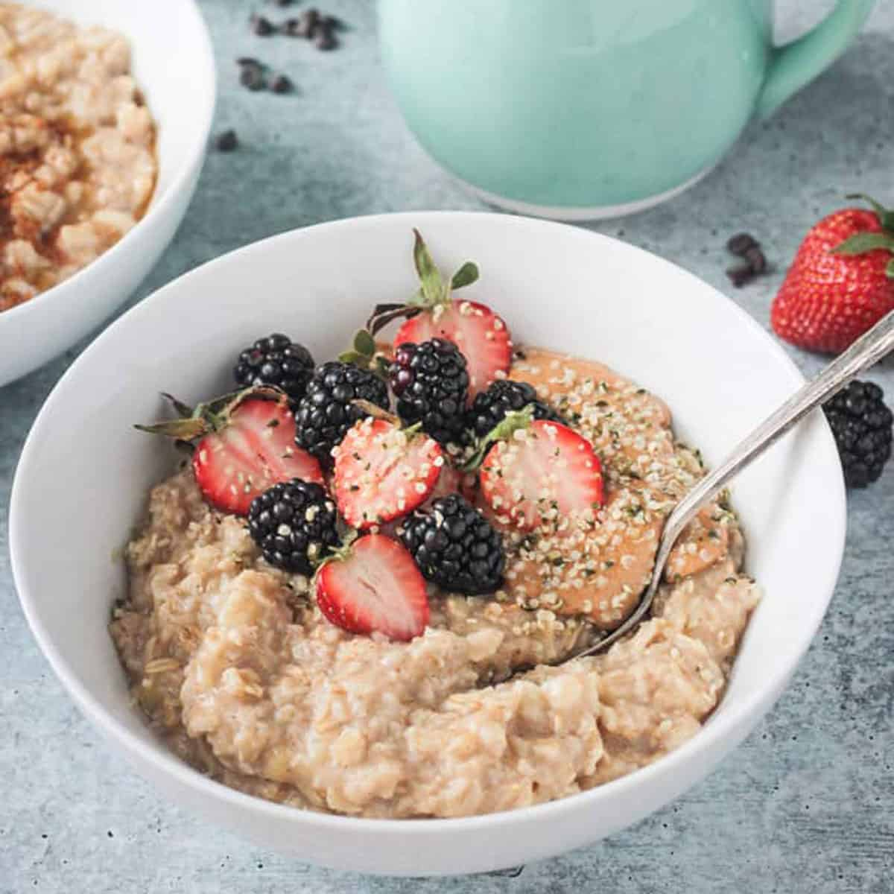

Simple Oatmeal

Description
Oatmeal is a quick and easy breakfast meal that is loved by many all across the globe
This specific recipe has been elevated with the addition of fruits which gave the bowl a tangy and sweet flavor
Ingredients
- 1 cup old-fashioned rolled oats
- 1 cup milk
- 1 cup water
- 1/8 teaspoon kosher salt
- 1/2 teaspoon ground cinnamon
- 1 teaspoon honey
- Desired toppings (such as sliced almonds, peanut butter, or fresh fruit)
- Combine oats, milk, water, salt, and cinnamon in a medium saucepan. Bring to a boil, then reduce heat to low.
- Simmer uncovered for 3 to 5 minutes until thickened, stirring occasionally. Remove from heat and let cool slightly.
- Divide equally between two bowls. Drizzle each serving with 1/2 teaspoon honey. Add additional desired toppings and serve.